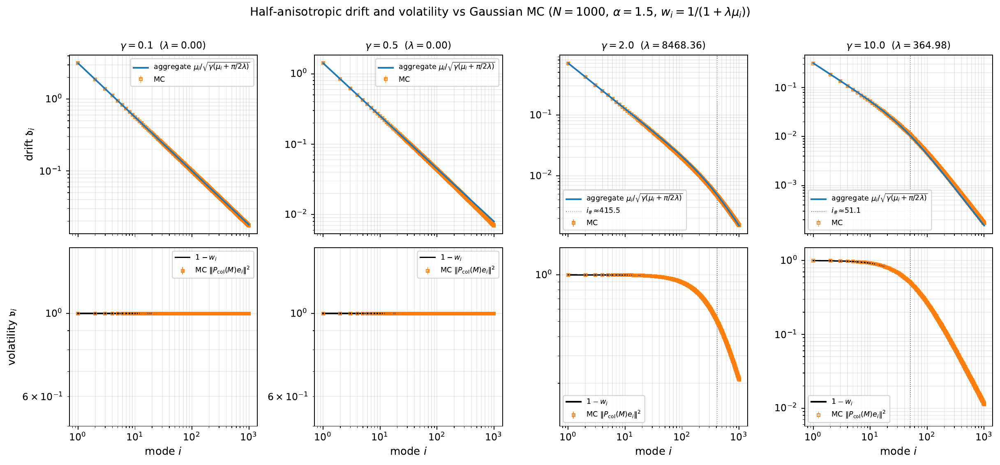

Muon and Spectral Optimizers
Module 4
1 Spectral Optimization of Weight Matrices
In the first three modules, we treated power-law covariance as a useful structure in a general high-dimensional learning problem. The covariance spectrum organized the directions that were easy or difficult to learn and helped predict the resulting optimization and scaling behavior.
We now focus specifically on the optimization of a weight matrix. Because the parameter is a matrix, its minibatch gradient \(G\) is itself a matrix. A key recent example is Muon (Jordan et al. 2024; Liu et al. 2025), which approximately orthogonalizes this gradient before using it to update the weights.
Here is the exact operation that we will study. If
\[ G=U\operatorname{diag}(\sigma_1,\ldots,\sigma_r)V^\top \]
is a thin singular value decomposition, define
\[ \boxed{\qquad \operatorname{SignSVD}(G)=UV^\top. \qquad} \]
SignSVD retains the left and right singular vectors of \(G\) but replaces every nonzero singular value by \(1\). Muon approximates this operation using a small number of Newton–Schulz iterations, avoiding the cost of computing an exact SVD. In this module, a spectral optimizer simply means an optimizer that transforms the singular values of a matrix gradient while retaining its singular-vector directions.
Our goal is to use the activation-covariance lens developed earlier in the course to understand this idea. A weight gradient couples the activations entering a layer to the errors propagated backward through it. Covariance therefore appears on both sides of the matrix update, and a spectral optimizer acts on the interaction between those two geometries.
How do covariance structure and batch size determine the effect of orthogonalizing a weight-matrix gradient?
We first derive the outer-product form of a weight gradient and then study what happens when the resulting minibatch matrix is replaced by \(\operatorname{SignSVD}(G)\). To separate this matrix operation from the momentum-scheduling question, the main analysis removes momentum.
2 Backpropagation Produces an Outer Product
Let \((X,Y)\) be a supervised example, let \(F_\theta(X)\) be the output of a network, and write the population objective as
\[ \mathcal L(\theta) =\mathbb E_{(X,Y)} \left[\ell\!\left(F_\theta(X),Y\right)\right]. \]
Focus on one weight matrix \(W\) inside the network. For a single example, let \(a\in\mathbb R^{n_{\rm in}}\) be the activation entering this layer and let
\[ z=Wa, \]
where \(z\in\mathbb R^{n_{\rm out}}\) is its preactivation. Everything after this layer is absorbed into the single-example loss. Define the error backpropagated to \(z\) by
\[ \delta =\nabla_z\ell\!\left(F_\theta(X),Y\right). \]
For vectors \(p\in\mathbb R^m\) and \(q\in\mathbb R^n\), we use \(p\otimes q\) for their matrix outer product:
\[ (p\otimes q)_{ij}=p_iq_j. \]
Proposition 1 (A Weight Gradient Is an Outer Product) For one example,
\[ \boxed{\qquad \nabla_W\ell=\delta\otimes a. \qquad} \]
Consequently, a batch gradient is a sum of rank-one matrices and has rank at most the batch size.
Indeed, if \(W\) is perturbed by \(dW\), then
\[ \begin{aligned} d\ell &=\sum_i\delta_i\,dz_i\\ &=\sum_{i,j}\delta_i a_j\,dW_{ij}\\ &=\left\langle\delta\otimes a,dW\right\rangle_F. \end{aligned} \]
The coefficient of \(dW\) in the Frobenius inner product is the gradient.
For a minibatch of \(B\) examples, the gradient is therefore
\[ \boxed{\qquad G_B=\frac1B\sum_{b=1}^B\delta_b\otimes a_b, \qquad \operatorname{rank}(G_B)\le B. \qquad} \]
This factorization is the first appearance of the batch threshold. A batch of size \(B\) can span at most \(B\) matrix directions, no matter how large the weight matrix is.
2.1 Covariance acts from both sides
There are two geometries in the update:
- the activation covariance lives on the right of \(W\);
- the covariance of upstream directions lives on the left of \(W\).
In a real network, \(\delta\) and \(a\) are dependent and both change during training. The model below deliberately freezes their large-scale covariance structure. That simplification lets us ask what a spectral optimizer does when the two sides already have specified spectra.
3 A Matrix-Valued Least-Squares Surrogate
Let
\[ x\sim\mathcal N(0,\Sigma_{\rm in}), \qquad y\sim\mathcal N(0,\Sigma_{\rm out}) \]
be independent. Think of \(x\) as the activation-side direction and \(y\) as a base direction on the backpropagation side. A teacher matrix \(W_\star\) generates the scalar response \(\langle y\otimes x,W_\star\rangle_F\). For
Independence is a tractability assumption, not a claim about an actual network. In a network, the activation entering a layer and the error backpropagated through that layer are generated by the same example and the same current parameters, so they are generally dependent.
The independent surrogate has two useful freedoms. The input and output dimensions may differ, and \(\Sigma_{\rm in}\) and \(\Sigma_{\rm out}\) may be chosen independently, with unrelated spectra and eigenvectors. More importantly, the population Hessian factorizes:
\[ \mathcal K(H) =\mathbb E[yy^\top Hxx^\top] =\Sigma_{\rm out}H\Sigma_{\rm in}. \]
Its eigenmodes are therefore the rank-one pairs \(u_i\otimes v_j\), with eigenvalues \(\mu_i\lambda_j\). For a dependent pair \((x,y)\), the correct operator is still
\[ \mathcal K_{\rm joint}(H) =\mathbb E[yy^\top Hxx^\top], \]
but it need not factorize. The paired spectrum can then be replaced by the spectrum of a genuinely coupled fourth-moment operator. This makes the resolvent and drift calculations harder, even if the qualitative mechanism survives.
A tractable first extension would take \((x,y)\) jointly Gaussian with block covariance
\[ \operatorname{Cov} \begin{pmatrix}x\\y\end{pmatrix} = \begin{pmatrix} \Sigma_{\rm in} & C^\top\\ C & \Sigma_{\rm out} \end{pmatrix}, \]
or equivalently use a conditional model such as \(y=Ax+\varepsilon\). The cross-covariance \(C\) would encode alignment between activation and backpropagation directions. A more faithful network model would instead study the evolving joint law of the actual pair \((a,\delta)\), possibly layer by layer and over training time.
Working conjecture. Generic dependence may change constants, kernels, and phase boundaries without changing the basic two-sided anisotropy mechanism or the batch-rank threshold. Strong or low-rank dependence could matter more by creating new aligned modes. This has not been established.
Two natural questions are:
- Does removing independence change the scaling exponents and phase diagram, or mainly the formulas used to compute them?
- Which joint model best captures the dependence between activations and backpropagated errors inside a trained network?
\[ \Delta=W-W_\star, \]
define the single-sample loss
\[ \ell(W;x,y) =\frac12 \left\langle y\otimes x,\Delta\right\rangle_F^2. \]
Its gradient is
\[ \boxed{\qquad \nabla_W\ell =(y\otimes x)\left\langle y\otimes x,\Delta\right\rangle_F = \underbrace{\left[ y\left\langle y\otimes x,\Delta\right\rangle_F \right]}_{\text{upstream error}} \otimes \underbrace{x}_{\text{activation}}. \qquad} \]
Thus the surrogate retains the exact outer-product form of a layer gradient. It also isolates the two covariance operators:
\[ \mathbb E[\nabla_W\ell] =\Sigma_{\rm out}\Delta\Sigma_{\rm in}. \]
The population risk is
\[ \begin{aligned} \mathcal R(W) &=\frac12\mathbb E\left(y^\top\Delta x\right)^2\\ &=\frac12 \operatorname{tr}\!\left( \Delta^\top\Sigma_{\rm out}\Delta\Sigma_{\rm in} \right). \end{aligned} \]
The corresponding Hessian is the linear operator
\[ \boxed{\qquad \mathcal K(H)=\Sigma_{\rm out}H\Sigma_{\rm in}. \qquad} \]
This is the matrix version of the covariance Hessian from Modules 2 and 3. It makes the left/right interpretation precise.
Let
\[ \Sigma_{\rm out}u_i=\mu_i u_i, \qquad \Sigma_{\rm in}v_j=\lambda_j v_j. \]
The rank-one matrices \(u_i\otimes v_j\) are eigenvectors of the Hessian operator:
\[ \mathcal K(u_i\otimes v_j) =\mu_i\lambda_j\,(u_i\otimes v_j). \]
Writing
\[ \Delta=\sum_{i,j}a_{ij}(u_i\otimes v_j), \qquad a_{ij}=\langle u_i\otimes v_j,\Delta\rangle_F, \]
gives
\[ \boxed{\qquad \mathcal R(W) =\frac12\sum_{i,j}\mu_i\lambda_j a_{ij}^2. \qquad} \]
For an \(N\times N\) matrix, the natural eigenbasis therefore contains \(N^2\) pairs \((i,j)\). Equivalently,
\[ \operatorname{vec}\!\left(\mathcal K(H)\right) =(\Sigma_{\rm in}\otimes\Sigma_{\rm out})\operatorname{vec}(H). \]
The paired spectrum \(\{\mu_i\lambda_j\}\) is the matrix analogue of the one-index covariance spectrum in vector regression.
The toy problem is ordinary least squares in the \(N^2\)-dimensional feature \(y\otimes x\), but it preserves the matrix layout that a spectral optimizer uses and exposes the activation and backpropagation covariances separately.
4 From an Orthogonalized Gradient to Muon
Take a thin singular value decomposition of the minibatch gradient,
\[ G=U\operatorname{diag}(\sigma_1,\ldots,\sigma_r)V^\top, \qquad r=\operatorname{rank}(G). \]
A spectral update keeps \(U\) and \(V\) but transforms the singular values:
\[ \widetilde G =\varphi(GG^\top)G =U\operatorname{diag}\!\left( \varphi(\sigma_k^2)\sigma_k \right)V^\top. \]
One useful axis is the spectral power \(p\). On the nonzero singular subspace, take
\[ \varphi_p(s)=s^{(p-1)/2}, \qquad \widetilde G_p =(GG^\top)^{(p-1)/2}G =U\Sigma^pV^\top, \]
where \(\Sigma=\operatorname{diag}(\sigma_1,\ldots,\sigma_r)\). Thus an inverse power in the preconditioner need not invert the final spectrum: it sends \(\sigma\) to \(\sigma^p\).
| Update | Formula | Spectral action and interpretation |
|---|---|---|
| SGD | \(G=U\Sigma V^\top\) | \(\sigma\mapsto\sigma\). Retains the magnitude hierarchy of the gradient. |
| Spectral power \(p\) | \(U\Sigma^pV^\top\) | \(\sigma\mapsto\sigma^p\). Values \(0<p<1\) interpolate between full flattening and SGD; \(p<0\) reverses the singular-value ordering and requires damping or truncation near zero. |
| SignSVD / exact Muon core | \(UV^\top\) | \(\sigma\mapsto1\). Completely flattens the nonzero spectrum. |
| Instantaneous Shampoo | \((GG^\top)^{\dagger/4}G(G^\top G)^{\dagger/4}\) | Also \(\sigma\mapsto1\): with no accumulation or damping, the two inverse fourth roots produce the exact polar factor. |
| Finite-NS Muon | \(\operatorname{NS}_K(G)\) | Approximates \(\sigma\mapsto1\) using a small fixed number of matrix multiplications. |
The table is a family, not a ranking. Recent work studies fractional and even inverted spectra, and finds that full flattening is not uniformly the empirical winner; the preferred exponent depends on the task and training regime (Dong and Sawin 2026; Shumaylov et al. 2026). The polar map \(p=0\) is therefore an especially important point on a broader design axis, rather than the only plausible spectral transformation.
For SignSVD,
\[ \boxed{\qquad \operatorname{polar}(G) =(GG^\top)^{\dagger/2}G =UV^\top. \qquad} \]
The dagger denotes the pseudoinverse on the nonzero singular space. SignSVD equalizes nonzero singular values while retaining their singular vectors. It is therefore basis-covariant:
\[ \operatorname{polar}(QGR^\top) =Q\,\operatorname{polar}(G)\,R^\top \]
for orthogonal \(Q,R\).
Entrywise SignSGD instead sends each matrix entry to its sign. It is sensitive to the coordinate basis. When Adam’s two moment parameters are set to zero, its normalized update reduces to this entrywise sign rule, making SignSGD a tractable Adam-like comparator (Bernstein et al. 2018; Xiao et al. 2025).
4.1 The relation between SignSVD and Muon
Orthogonalized-gradient and stochastic spectral-descent methods predate Muon (Carlson et al. 2015; Tuddenham et al. 2022). It is also closely related to Shampoo (Gupta et al. 2018). In a stylized form, standard Muon forms a momentum buffer and applies a few Newton–Schulz iterations to that buffer:
\[ \begin{aligned} M_{t+1}&=\beta_{\rm mom}M_t+G_t,\\ W_{t+1}&=W_t-\eta\, \operatorname{NS}_K(M_{t+1}). \end{aligned} \]
Muon’s practical implementations contain important normalization and scaling choices. Relative to exact SignSVD, its two additional choices are separable:
- use momentum before orthogonalization;
- approximate the polar factor without computing an SVD (Jordan et al. 2024; Liu et al. 2025).
For a matrix gradient \(G=U\Sigma V^\top\), remove Shampoo’s accumulation and damping and take inverse powers only on the nonzero singular subspace. Its two-sided matrix update becomes
\[ \begin{aligned} (GG^\top)^{\dagger/4}G(G^\top G)^{\dagger/4} &=(U\Sigma^{-1/2}U^\top) (U\Sigma V^\top) (V\Sigma^{-1/2}V^\top)\\ &=UV^\top =\operatorname{polar}(G). \end{aligned} \]
Thus instantaneous, no-damping Shampoo is algebraically the exact Muon core. Adding momentum before this operation gives the usual conceptual description of Muon (Jordan et al. 2024). This identity is deliberately narrow: full Shampoo maintains historical left and right Gram matrices and applies inverse fourth roots to those accumulated statistics. It is not generally the same optimizer as Muon (Eschenhagen et al. 2026).
The implementation difference matters. Shampoo’s inverse-root route must decide how to damp or truncate very small eigenvalues and normally requires an eigendecomposition or an inverse-root iteration. Muon instead approximates the instantaneous polar factor with matrix multiplications. Jordan reports that the coupled inverse-fourth-root iteration used in Shampoo required float32 to avoid numerical instability, whereas the Newton–Schulz polar iteration ran stably in bfloat16 (Jordan et al. 2024). In this specific sense, Muon is a substantially more numerically robust, accelerator-friendly implementation of the instantaneous Shampoo update—not a replacement for Shampoo’s temporal adaptation.
A recent public debugging exchange between Rohan Anil and Keller Jordan, together with the follow-up issue filed by Anil, makes the small-eigenvalue issue unusually concrete: truncating the inverse power near zero, so that it behaved like a pseudoinverse, materially changed the reported Shampoo benchmark. That record is more useful here than a screenshot because the equations, code fragment, and surrounding context remain searchable and accessible.
Newton–Schulz is a fixed-point method for computing the polar factor without forming an SVD. Begin by normalizing the matrix to have Frobenius norm one:
\[ X_0=\frac{G}{\|G\|_F+\varepsilon}. \]
This normalization is cheap: \(\|G\|_F^2\) is just the sum of the squared entries. It also guarantees
\[ \|X_0\|_{\rm op}\le \|X_0\|_F\approx1. \]
When many singular values contribute to the Frobenius norm, each normalized singular value is much smaller than one. For example, if \(r\) singular values have comparable size, they begin at order \(r^{-1/2}\). The initialization is therefore dimension-dependently small even though the Frobenius norm has been set to one.
The classical polar iteration is
\[ X_{k+1} =\frac12\left(3X_k-X_kX_k^\top X_k\right). \]
If \(X_k=U\operatorname{diag}(s_{k,i})V^\top\), the singular vectors remain fixed and each singular value follows the scalar iteration
\[ s_{k+1}=\frac12\left(3s_k-s_k^3\right). \]
For \(0<s_k\le1\), this map drives \(s_k\) toward the attracting fixed point \(s=1\). Thus Newton–Schulz tries to map all nonzero singular values to one using only matrix multiplications.
A common Muon implementation uses the more aggressive quintic iteration
\[ \begin{aligned} A_k&=X_kX_k^\top,\\ X_{k+1} &=aX_k+\left(bA_k+cA_k^2\right)X_k, \end{aligned} \]
with
\[ (a,b,c)=(3.4445,-4.7750,2.0315). \]
Its scalar map is
\[ s_{k+1}=a s_k+b s_k^3+c s_k^5. \]
Near zero its slope is \(a=3.4445\), rather than \(3/2\) for the classical iteration. This quickly lifts the many very small singular values created by Frobenius normalization. The tradeoff is that these practical coefficients are designed for a small, fixed number of iterations—typically five—and do not compute the exact polar factor to high precision. They rapidly move the spectrum toward order-one values, which is the approximation to SignSVD used by Muon (Jordan et al. 2024).
This module sets \(\beta_{\rm mom}=0\) and replaces the finite Newton–Schulz map by the exact polar factor. The resulting algorithm is SignSVD. This isolates the spectral transformation from both the polynomial approximation and the temporal averaging. In the present surrogate, the later comparison in Section 14 gives no evidence that momentum is the source of Muon’s benefit: no-momentum finite-NS Muon follows SignSVD, while momentum raises the noise-floor coefficient. That is evidence about this model, not a universal claim about transformer training.
5 One Step: Descent Plus Volatility
For a minibatch \((x_b,y_b)_{b=1}^B\), define the residuals
\[ d_b =\left\langle y_b\otimes x_b,\Delta\right\rangle_F. \]
The minibatch gradient is
\[ \boxed{\qquad G(\Delta) =\frac1B\sum_{b=1}^B d_b\,(y_b\otimes x_b). \qquad} \]
It is random, depends on the current error \(\Delta\), and has rank at most \(B\). Let \(S=\operatorname{polar}(G)\) and update
\[ \Delta^+=\Delta-\eta S. \]
In the paired covariance basis, set
\[ a_{ij}=u_i^\top\Delta v_j, \qquad s_{ij}=u_i^\top S v_j, \qquad q_{ij}=a_{ij}^2. \]
The exact one-step expansion is
\[ \boxed{\qquad q_{ij}^+ =q_{ij}-2\eta a_{ij}s_{ij}+\eta^2s_{ij}^2. \qquad} \]
The two new terms have different meanings:
- \(a_{ij}s_{ij}\) is the alignment of the update with the current error and produces descent;
- \(s_{ij}^2\) is the squared update placed into that mode and produces stochastic volatility.
In the proportional high-dimensional limit, these random quantities self-average. Define deterministic kernels by
\[ \mathbb E[a_{ij}s_{ij}\mid\Delta] \simeq \frac{\mathfrak d_{ij}}{\sqrt{\mathcal R}}q_{ij}, \qquad \mathbb E[s_{ij}^2\mid\Delta] \simeq \mathfrak v_{ij}. \]
The projected risks then follow the closed recursion
\[ \boxed{ q_{ij}(t+1) =q_{ij}(t) -\frac{2\eta\mathfrak d_{ij}(t)} {\sqrt{\mathcal R(t)}}q_{ij}(t) +\eta^2\mathfrak v_{ij}(t), } \]
with
\[ \mathcal R(t) =\frac12\sum_{i,j}\mu_i\lambda_jq_{ij}(t). \]
This is the same descent-versus-variance architecture that appeared for SGD in Modules 2 and 3. What has changed is the state space: the modes are pairs, and the kernels must describe the singular vectors of a random matrix-valued gradient.
Once \(\mathfrak d_{ij}\) and \(\mathfrak v_{ij}\) are known, the stochastic optimizer has been replaced by a deterministic dynamical system. The random matrix calculation is the map
\[ (\Sigma_{\rm out},\Sigma_{\rm in},B,\varphi) \longmapsto (\mathfrak d_{ij},\mathfrak v_{ij}). \]
6 The Random-Matrix Computation
The spectral transform depends on the risk-normalized Gram matrix and its two resolvents,
\[ H=\frac{GG^\top}{2\mathcal R},\qquad R(z)=(H-zI)^{-1},\qquad \widetilde R(z)=\left(\frac{G^\top G}{2\mathcal R}-zI\right)^{-1}. \]
Write \(\gamma_{\rm out}=n_{\rm out}/B\) and \(\gamma_{\rm in}=n_{\rm in}/B\). The density of the eigenvalues of \(H\) is recovered from the imaginary part of the normalized trace of \(R(z)\).
6.1 Model computation: the double-Wishart spectrum
First remove the dependence between the residuals and the data. Let \(Y\in\mathbb R^{n_{\rm out}\times B}\) and \(X\in\mathbb R^{n_{\rm in}\times B}\) be independent standard Gaussian matrices, and let \(D\) be a deterministic diagonal matrix. Consider
\[ G_0=\frac1B YDX^\top,\qquad H_0=G_0G_0^\top=\frac1B YCY^\top,\qquad C=\frac1B DX^\top XD. \]
Conditioned on \(X\), the matrix \(H_0\) is an ordinary sample covariance matrix whose population matrix is the random matrix \(C\). When \(D=I\), \(C\) is itself a companion Wishart matrix. Thus \(H_0\) is a double-Wishart matrix: one Marchenko–Pastur computation is nested inside another.
Let \(\nu_C\) be the limiting empirical eigenvalue distribution of \(C\), and set
\[ R_0(z)=(H_0-zI)^{-1},\qquad m_{H_0}(z)=\frac1{n_{\rm out}}\operatorname{tr}R_0(z). \]
The outer Marchenko–Pastur step is summarized by a scalar \(q(z)\):
\[ \boxed{ \begin{aligned} q(z) &= \left[ 1+\int \frac{t}{\gamma_{\rm out}q(z)t-z}\,d\nu_C(t) \right]^{-1},\\ m_{H_0}(z) &= \frac1{\gamma_{\rm out}} \int\frac{1}{\gamma_{\rm out}q(z)t-z}\,d\nu_C(t) +\frac{\gamma_{\rm out}^{-1}-1}{z}. \end{aligned} } \]
The boundary value \(\pi^{-1}\operatorname{Im}m_{H_0}(x+i0^+)\) is the spectral density. The last term accounts for the different numbers of zero eigenvalues in the two rectangular companion matrices.
Condition on \(C\) and write \(p=n_{\rm out}\) and \(\gamma_{\rm out}=p/B\). The matrix
\[ \widehat H_0 =\frac1B C^{1/2}Y^\top YC^{1/2} \]
has the same nonzero eigenvalues as \(H_0\). Set
\[ W=\frac1{\sqrt p}Y^\top,\qquad \Lambda=\gamma_{\rm out}C,\qquad \widehat H_0=\Lambda^{1/2}WW^\top\Lambda^{1/2}, \qquad \widehat R=(\widehat H_0-zI)^{-1}. \]
This is now exactly the deformed-Wishart setup from Module 2, conditional on \(C\). For a perturbation \(W\mapsto W+\varepsilon\Delta\), define
\[ \partial_\Delta F(W) =\left.\frac{d}{d\varepsilon} F(W+\varepsilon\Delta)\right|_{\varepsilon=0}. \]
The two directional derivatives needed below are
\[ \partial_\Delta\widehat H_0 =\Lambda^{1/2} (\Delta W^\top+W\Delta^\top) \Lambda^{1/2}, \qquad \partial_\Delta\widehat R =-\widehat R (\partial_\Delta\widehat H_0) \widehat R. \]
Let \(\widetilde W\) be an independent copy of \(W\). Matrix Gaussian integration by parts says that, for every smooth compatible matrix-valued function \(F\),
\[ \boxed{\qquad \mathbb E\!\left[F(W)W^\top\mid C\right] = \mathbb E\!\left[ \bigl(\partial_{\widetilde W}F(W)\bigr) \widetilde W^\top \,\middle|\,C \right]. \qquad} \]
The independent direction replaces all entrywise derivatives at once. Apply this identity to
\[ F(W)=\widehat R\Lambda^{1/2}W. \]
The product rule gives
\[ \begin{aligned} \partial_{\widetilde W} (\widehat R\Lambda^{1/2}W) ={}& -\widehat R\Lambda^{1/2} (\widetilde W W^\top+W\widetilde W^\top) \Lambda^{1/2}\widehat R\Lambda^{1/2}W\\ &+\widehat R\Lambda^{1/2}\widetilde W. \end{aligned} \]
Multiplying by \(\widetilde W^\top\Lambda^{1/2}\) performs two possible Wick contractions. For a \(p\times p\) matrix \(A\),
\[ \underbrace{ \mathbb E_{\widetilde W} [\widetilde W A\widetilde W^\top] }_{\text{coherent}} =\frac1p\operatorname{tr}(A)I_B. \]
This closes an index loop and produces a normalized trace. The crossed pairing obeys
\[ \underbrace{ \mathbb E_{\widetilde W} [\widetilde W^\top B_0C_0\widetilde W^\top] }_{\text{incoherent}} =\frac1p C_0^\top B_0^\top. \]
It reverses the matrix order and produces an explicit \(p^{-1}\) matrix correction rather than a trace. Carrying out the two contractions gives the conditional master equation
\[ \boxed{ \mathbb E[\widehat R\widehat H_0\mid C] = \mathbb E\!\left[ q_p(z)\widehat R\Lambda -\frac1p\widehat R\widehat H_0\widehat R\Lambda \,\middle|\,C \right], \qquad q_p(z) =1-\frac1p\operatorname{tr}(\widehat R\widehat H_0). } \]
The first term is the coherent contribution. The second is the incoherent correction. For fixed \(\operatorname{Im}z>0\), the resolvent bound \(\|\widehat R(z)\|\le(\operatorname{Im}z)^{-1}\) makes the explicit \(p^{-1}\) correction negligible. Gaussian concentration then lets \(q_p(z)\) be replaced by its deterministic limit \(q(z)\). Using \(\widehat R\widehat H_0=I+z\widehat R\) gives
\[ \widehat R(z) \simeq \bigl(\gamma_{\rm out}q(z)C-zI\bigr)^{-1}. \]
Finally,
\[ q(z) = \left[ 1+\frac1B \operatorname{tr}\!\left( C(\gamma_{\rm out}q(z)C-zI)^{-1} \right) \right]^{-1}. \]
Replacing the normalized trace by the integral against \(\nu_C\) gives the first boxed equation above. Since \(H_0\) and \(\widehat H_0\) have the same nonzero eigenvalues,
\[ \operatorname{tr}R_0(z) -\operatorname{tr}\widehat R(z) =\frac{B-p}{z}, \]
which gives the displayed formula for \(m_{H_0}\).
The inner law \(\nu_C\) is found by applying the same matrix-Stein calculation to \(C=DX^\top XD/B\). For \(D=I\), it is the companion Marchenko–Pastur law with aspect ratio \(\gamma_{\rm in}\). For deterministic \(D\), it is the deformed law generated by the empirical distribution of \(D^2\). The spectrum of \(H_0\) is therefore the multiplicative composition of the two Marchenko–Pastur laws, with the law of \(D^2\) inserted between them. In the square case \(n_{\rm out}=n_{\rm in}=B\) and \(D=I\), this is the order-two Fuss–Catalan law.
6.2 Returning to the anisotropic gradient
Population covariances replace the scalar deterministic equivalent by one that is diagonal in the covariance eigenbases. Define the two weighted traces:
\[ \sigma=\frac1B\operatorname{tr}(R\Sigma_{\rm out}), \qquad \widetilde\sigma =\frac1B\operatorname{tr}(\widetilde R\Sigma_{\rm in}). \]
For Gaussian residual weights, the full fixed point is:
\[ \boxed{ \begin{aligned} \sigma &=\frac1B\sum_i\frac{\mu_i}{\widetilde s_1\mu_i-z}, &\qquad \widetilde\sigma &=\frac1B\sum_j\frac{\lambda_j}{s_1\lambda_j-z},\\ s_1 &=\widetilde s_1\frac{\sigma}{\widetilde\sigma}, & \widetilde s_1\sigma &=f(\xi),\qquad \xi=\frac1{\sqrt{-2z\sigma\widetilde\sigma}}. \end{aligned} } \]
The scalar closure is \(f(\xi)=\mathbb E[V^2/(V^2+2\xi^2)] =1-\sqrt\pi\,\xi e^{\xi^2}\operatorname{erfc}(\xi)\) for \(V\sim\mathcal N(0,1)\). The corresponding resolvent equivalents are:
\[ \mathbb E R(z)\simeq (\widetilde s_1\Sigma_{\rm out}-zI)^{-1}, \qquad \mathbb E\widetilde R(z)\simeq (s_1\Sigma_{\rm in}-zI)^{-1}. \]
The function \(f\) records the limiting distribution of the diagonal residual weights. It does not arise from their dependence on the Gaussian data.

6.3 The spectrum is not the descent
Return to the actual residual diagonal
\[ \widehat D =\operatorname{diag}\left( \frac{d_1}{\sqrt{2\mathcal R}},\ldots, \frac{d_B}{\sqrt{2\mathcal R}} \right), \qquad \frac{G}{\sqrt{2\mathcal R}} =\frac1B Y\widehat D X^\top. \]
The entries of \(\widehat D\) are asymptotically standard normal, but each one is built from the same \(x_b\) and \(y_b\) appearing in the corresponding column of the gradient. In the normalized trace calculation for the spectrum, derivatives of this coupled diagonal generate only incoherent or lower-order terms. Consequently, the limiting bulk spectrum is the same as if \(\widehat D\) were an independent diagonal matrix with the same empirical distribution.
That replacement is not valid for descent. The spectrum records the singular values of \(G\), but descent also needs their overlap with the current error \(\Delta\). Indeed, if \(\widehat D\) were independent with a symmetric law, the global sign change \(\widehat D\mapsto-\widehat D\) would leave \(R(z)\) unchanged and reverse \(G\), forcing \(\mathbb E[R(z)G]=0\). The coupled residuals break this independence and produce a nonzero one-resolvent observable:
\[ \mathbb E\!\left[R(z)G\mid\Delta\right] \simeq c(z)\, R_{\rm eq}(z)\Sigma_{\rm out}\Delta\Sigma_{\rm in} \widetilde R_{\rm eq}(z), \]
where \(c(z)\) is a scalar determined by the same fixed point. In the paired covariance basis this becomes
\[ u_i^\top\mathbb E[R(z)G\mid\Delta]v_j \simeq c(z)\, \frac{\mu_i\lambda_j\,a_{ij}} {(\widetilde s_1\mu_i-z)(s_1\lambda_j-z)}. \]
The spectral transform is recovered from
\[ \varphi(H)G =-\frac1{2\pi i}\oint\varphi(z)R(z)G\,dz. \]
Thus the same Stein–resolvent computation is repeated with \(G\) inserted as an observable. Coupling the residuals to the data leaves the bulk spectral density unchanged at leading order, but it creates the overlap proportional to \(\Delta\) that produces the descent kernel. The final coefficient is
\[ \boxed{ \mathfrak d_{ij} =-\frac{2\sqrt{\mathcal R}\,\mu_i\lambda_j}{\pi} \int_0^\infty x\,\varphi(2\mathcal R x)\, \operatorname{Im}\!\left[ \frac{\xi^2f(\xi)} {(\widetilde s_1\mu_i-z)(s_1\lambda_j-z)} \right]_{z=x+i0^+}\,dx. } \]
All the quantities inside the integral are obtained from the fixed point in the preceding subsection. For SignSVD, \(\varphi(s)=s^{-1/2}\) and
\[ \sqrt{\mathcal R}\,\varphi(2\mathcal R x)=\frac1{\sqrt{2x}}, \]
so \(\mathfrak d_{ij}\) is independent of the current risk. The half-anisotropic specialization below reduces the contour integral to a one-dimensional square-root spectral moment.
7 Isotropic Data: A Necessary Sanity Check
First take
\[ \Sigma_{\rm in}=\Sigma_{\rm out}=I_N. \]
All paired modes are exchangeable, so the \(N^2\) projected recursions collapse to one scalar recursion:
\[ \mathcal R(t+1) =\mathcal R(t) -2\eta\mathfrak d\sqrt{\mathcal R(t)} +\frac{\eta^2}{2}\mathfrak v. \]
For square \(N\times N\) matrices, the kernels are
| Algorithm | Drift \(\mathfrak d\) | Volatility \(\mathfrak v\) |
|---|---|---|
| SignSVD | \(C(N/B)\) | \(\min\{B,N\}\) |
| SignSGD | \(\mathcal N_B/\sqrt\pi\) | \(N^2\) |
Here
\[ \mathcal N_B =\mathbb E\left[ \left(\sum_{b=1}^B x_b^2y_b^2\right)^{1/2} \right] \sim\sqrt B, \]
and \(C(N/B)\) is the scalar obtained from the fixed-point spectral density.
For entrywise SignSGD, set \(S=\operatorname{sign}(G)\) instead of \(S=\operatorname{polar}(G)\). Fix one gradient entry \((p,n)\) and assume the error is diffuse, so no single entry of \(\Delta\) contributes a macroscopic fraction of \(\|\Delta\|_F^2=2\mathcal R\). Separate the matching coordinate from the residual:
\[ d_b =y_{bp}x_{bn}\Delta_{pn}+\zeta_b+\text{negligible cross terms}. \]
After deleting row \(p\) and column \(n\), an SVD of the remaining error matrix writes \(\zeta_b\) as a sum of independent products of Gaussians. A local limit theorem gives convergence of its density, not only its distribution:
\[ \zeta_b \ \overset{\rm density}{\approx}\ \sqrt{2\mathcal R}\,z_b, \qquad z_b\sim\mathcal N(0,1). \]
Density convergence is the relevant statement because the expectation of a sign is controlled by the density at zero. Conditional on \(\{y_{bp},x_{bn}\}_{b=1}^B\), the minibatch-gradient entry becomes
\[ G_{pn} \approx \frac1B\sum_{b=1}^B \left[ y_{bp}^2x_{bn}^2\Delta_{pn} +y_{bp}x_{bn}\sqrt{2\mathcal R}\,z_b \right]. \]
Write this as \(G_{pn}=\mu+Z\), where \(Z\) is conditionally centered and symmetric. Its conditional signal and variance are
\[ \mu =\frac{\Delta_{pn}}B\sum_{b=1}^B y_{bp}^2x_{bn}^2, \qquad \operatorname{Var}(Z) =\frac{2\mathcal R}{B^2} \sum_{b=1}^B y_{bp}^2x_{bn}^2. \]
For a centered Gaussian \(Z\) with standard deviation \(s\) and a small shift \(\mu\),
\[ \mathbb E[\operatorname{sign}(Z+\mu)] =2\Phi(\mu/s)-1 =\sqrt{\frac2\pi}\frac{\mu}{s} +O\!\left((\mu/s)^3\right). \]
Substitution and averaging over the exposed coordinates give
\[ \mathbb E[\operatorname{sign}(G_{pn})\mid\Delta] \simeq \sqrt{\frac2\pi}\, \frac{\mathcal N_B}{\sqrt{2\mathcal R}}\, \Delta_{pn}. \]
Since \(\mathcal N_B\sim\sqrt B\), the isotropic drift kernel is
\[ \boxed{\qquad \mathfrak d_{pn}^{\rm SignSGD} =\frac{\mathcal N_B}{\sqrt\pi} \sim\sqrt{\frac B\pi}. \qquad} \]
The volatility is simpler. Every entry of \(S=\operatorname{sign}(G)\) equals \(\pm1\) almost surely, so
\[ s_{pn}^2=1, \qquad \mathfrak v_{pn}^{\rm SignSGD}=1, \qquad \|S\|_F^2=n_{\rm out}n_{\rm in}. \]
Consequently, its exact quadratic contribution to the total risk is
\[ \boxed{\qquad \text{SignSGD volatility} =\frac{\eta^2}{2}\,n_{\rm out}n_{\rm in}. \qquad} \]
These are the two SignSGD entries in the isotropic comparison table (Xiao et al. 2025).
Minimizing the next-step risk over \(\eta\) gives
\[ \eta_\star(t) =\frac{2\mathfrak d\sqrt{\mathcal R(t)}}{\mathfrak v}. \]
Consequently,
\[ \frac{\eta_\star^{\rm SignSVD}} {\eta_\star^{\rm SignSGD}} \asymp \begin{cases} \sqrt N,&B\ge N,\\[2mm] N/\sqrt B,&B\le N. \end{cases} \]
The learning rates have very different normalizations, but after each method is tuned, their contraction rates agree up to absolute constants.
On isotropic data, SignSVD and SignSGD are essentially tied after tuning. Muon’s spectral geometry becomes useful only when the covariance is anisotropic.
8 Half-Anisotropy Removes One Spectral Index
Now set
\[ \Sigma_{\rm in}=I_N, \qquad \Sigma_{\rm out} =U\operatorname{diag}(\mu_1,\ldots,\mu_N)U^\top. \]
For comparison with the coordinate-dependent SignSGD update, take \(U\) to be a generic Haar-distributed eigenbasis. SignSVD itself is insensitive to this choice because its update is basis-covariant.
Because every input eigenvalue equals one, define the row-projected risks
\[ \boxed{\qquad r_i(t) =\sum_{j=1}^Nq_{ij}(t) =\|\Delta_t^\top u_i\|^2. \qquad} \]
Then
\[ \boxed{\qquad \mathcal R(t) =\frac12\sum_{i=1}^N\mu_i r_i(t). \qquad} \]
The state has collapsed from \(N^2\) paired order parameters to \(N\) time-dependent row norms. The isotropic side has not disappeared; it has been summed into a Euclidean norm.
The row risks satisfy
\[ \boxed{ r_i(t+1) =r_i(t) -\frac{2\eta\mathfrak d_i} {\sqrt{\mathcal R(t)}}r_i(t) +\eta^2\mathfrak v_i. } \]
This is the simplifier that makes the half-anisotropic model analytically and pedagogically useful.
8.1 The volatility cancellation
The cleanest calculation in the module is exact and finite-dimensional.
Proposition 2 (SignSVD Volatility Is a Projection) Let \(S=\operatorname{polar}(G)=U_rV_r^\top\) be the SignSVD update. In the row-risk recursion, the quadratic update term is
\[ \boxed{\qquad \|S^\top u_i\|^2 =u_i^\top P_{\operatorname{col}(G)}u_i. \qquad} \]
If \(B\ge N\) and the square gradient has full row rank, this equals \(1\) for every mode. If \(B<N\), the volatility weights satisfy
\[ 0\le \mathfrak v_i\le1, \qquad \sum_{i=1}^N\mathfrak v_i=B \]
in the generic rank-\(B\) case.
To see the cancellation, expand the row norm:
\[ \begin{aligned} r_i^+ &=\|(\Delta-\eta S)^\top u_i\|^2\\ &=r_i -2\eta\langle\Delta^\top u_i,S^\top u_i\rangle +\eta^2\|S^\top u_i\|^2. \end{aligned} \]
Since \(S=U_rV_r^\top\),
\[ SS^\top =U_rV_r^\top V_rU_r^\top =U_rU_r^\top =P_{\operatorname{col}(G)}. \]
Therefore
\[ \|S^\top u_i\|^2 =u_i^\top SS^\top u_i =u_i^\top P_{\operatorname{col}(G)}u_i. \]
If \(G\) has full row rank, the projector is \(I\). Below the threshold it is a rank-\(B\) projector, and summing over an orthonormal basis gives
\[ \sum_i u_i^\top P_{\operatorname{col}(G)}u_i =\operatorname{tr}P_{\operatorname{col}(G)} =B. \]
The transform \(\sigma_k\mapsto1\) is what makes the singular values cancel. For a general spectral map,
\[ SS^\top =U_r\operatorname{diag} \left(\varphi(\sigma_k^2)^2\sigma_k^2\right)U_r^\top, \]
so the volatility retains a nontrivial spectral weight.
Above the batch threshold, SignSVD injects exactly the same squared update into every output covariance mode. Below it, volatility is nothing more than participation in the batch-resolved column space. This is the cancellation that turns a difficult two-resolvent variance calculation into a projector identity.
9 The Half-Anisotropic Deterministic Equivalent
Set
\[ \gamma=\frac NB. \]
Because the input spectrum is now \(\lambda_j=1\), the second spectral sum in the full fixed point becomes algebraic:
\[ \boxed{ \begin{aligned} \sigma &=\frac1B\sum_{i=1}^N \frac{\mu_i}{\widetilde s_1\mu_i-z},\\ \widetilde s_1\sigma &=f(\xi),\\ \widetilde\sigma &=\frac{f(\xi)-\gamma}{z},\\ s_1 &=z+\frac{\gamma}{\widetilde\sigma},\\ \xi &=\frac1{\sqrt{-2z\sigma\widetilde\sigma}}. \end{aligned} } \]
There is now only one nontrivial population spectral sum. For mode \(i\), define the projected spectral density
\[ \rho_i(x) =\frac1\pi\operatorname{Im} \left[ \frac1{\widetilde s_1(x+i0^+)\mu_i-x} \right]. \]
For SignSVD the two kernels are simply
\[ \boxed{ \mathfrak d_i =\frac1\gamma\int_0^\infty\sqrt x\,\rho_i(x)\,dx, \qquad \mathfrak v_i =\int_0^\infty\rho_i(x)\,dx. } \]
The drift is the square-root moment of the mode-projected batch spectrum. The volatility is its total mass, which agrees with the projection identity above.
10 Large Batch: Square-Root Preconditioning
Suppose \(B\ge N\), or \(\gamma\le1\). Every output mode is resolved and the kernels reduce to
\[ \boxed{\qquad \mathfrak d_i=\sqrt{\frac{\mu_i}{\gamma}}, \qquad \mathfrak v_i=1. \qquad} \]
Ignoring the volatility for a moment, introduce the algorithmic time
\[ d\tau=\frac{\eta}{\sqrt{\mathcal R(t)}}\,dt. \]
The row modes decay as
\[ \frac{dr_i}{d\tau} =-2\sqrt{\frac{\mu_i}{\gamma}}\,r_i. \]
Ordinary gradient descent instead uses the population gradient \(\Sigma_{\rm out}\Delta\) and therefore has mode rate proportional to \(\mu_i\):
\[ \frac{dr_i}{dt} \propto-2\mu_i r_i. \]
At the operator level,
\[ \text{gradient descent:}\quad -\mathcal K(\Delta), \qquad \text{SignSVD drift:}\quad -\mathcal K^{1/2}(\Delta) \]
up to the common risk and aspect-ratio normalization. A condition number \(\kappa\) is therefore reduced to \(\sqrt\kappa\), just as in classical acceleration on a strongly convex quadratic.
The same conclusion holds when the nontrivial spectrum is on the activation side. Transposing the entire model exchanges the two covariance factors and leaves the square-root mechanism unchanged.
Once the batch resolves every matrix direction, SignSVD turns a covariance eigenvalue \(\mu_i\) into an effective drift of order \(\sqrt{\mu_i}\). This is the precise sense in which it acts as a square-root preconditioner.
11 Small Batch: Spectral Resolution Thresholding
Now suppose \(B<N\). To avoid confusing it with the input eigenvalues \(\lambda_j\), introduce a positive resolution scale \(\Lambda\) defined implicitly by
\[ \boxed{\qquad B=\sum_{i=1}^N \frac{\Lambda\mu_i}{1+\Lambda\mu_i}. \qquad} \]
Define
\[ w_i=\frac1{1+\Lambda\mu_i}. \]
Then the SignSVD volatility is
\[ \boxed{\qquad \mathfrak v_i =1-w_i =\frac{\Lambda\mu_i}{1+\Lambda\mu_i}. \qquad} \]
The identity defining \(\Lambda\) is exactly the rank sum rule \(\sum_i\mathfrak v_i=B\).
The drift has the accurate aggregate approximation
\[ \boxed{\qquad \mathfrak d_i \approx \frac{\mu_i\sqrt B} {\sqrt{N\left(\mu_i+\pi/(2\Lambda)\right)}}. \qquad} \]
There are two asymptotic behaviors:
\[ \mathfrak d_i \approx \begin{cases} \sqrt{\mu_i}\sqrt{B/N}, &\Lambda\mu_i\gg1 \quad\text{resolved},\\[2mm] \mu_i\sqrt{2\Lambda B/(\pi N)}, &\Lambda\mu_i\ll1 \quad\text{unresolved}. \end{cases} \]
Resolved modes receive the square-root-preconditioned drift. Unresolved modes have drift linear in \(\mu_i\), the same spectral power as SGD. Batch size is therefore a spectral resolution scale, not merely a variance-reduction parameter.

12 Power-Law Covariance
Specialize to
\[ \mu_i=i^{-\alpha}, \qquad r_i(0)=i^{-\beta}, \qquad \alpha>0. \]
The initial risk is finite in the infinite-dimensional idealization when
\[ \alpha+\beta>1. \]
This uses the same course convention as the previous modules: \(\alpha\) is the decay exponent of covariance eigenvalues.
The resolution boundary is
\[ i_\#=\Lambda^{1/\alpha}, \]
because \(\Lambda\mu_i\asymp1\) there. For \(B<N\),
\[ i_\# \asymp \begin{cases} B, &\alpha>1,\\[2mm] B/\log(N/B), &\alpha=1 \quad\text{up to logarithmic placement},\\[2mm] B^{1/\alpha}/N^{1/\alpha-1}, &0<\alpha<1. \end{cases} \]
For a trace-class spectrum \(\alpha>1\), a batch resolves order \(B\) leading modes. For a higher-rank spectrum \(\alpha<1\), it may resolve much less. The example
\[ \alpha=\frac12 \qquad\Longrightarrow\qquad i_\#\asymp\frac{B^2}{N} \]
is particularly sharp: a batch \(B\asymp\sqrt N\) resolves only order-one modes. Once \(B\ge N\), all modes are resolved and this threshold disappears.
Proposition 3 (Half-Anisotropic SignSVD Summary) For power-law covariance, SignSVD has two spectral regimes:
\[ \begin{array}{c|c|c} &\text{drift}&\text{volatility}\\ \hline \text{resolved head} &\sqrt{\mu_i}\sqrt{B/N} &1\\[1mm] \text{unresolved tail} &\mu_i\sqrt{2\Lambda B/(\pi N)} &\Lambda\mu_i \end{array} \]
The batch selects the boundary. Above \(B=N\), the entire spectrum lies in the first row.
The phase comparison below uses entrywise SignSGD in the same half-anisotropic model. The local-limit conditioning from the isotropic calculation, now summed over the isotropic input index, gives
\[ \boxed{\qquad \mathfrak d_i^{\rm SignSGD} =\frac{\mu_i\mathcal N_B}{\sqrt{\pi\overline\mu}}, \qquad \overline\mu=\frac1N\sum_{k=1}^N\mu_k. \qquad} \]
Thus SignSGD retains drift proportional to \(\mu_i\), rather than the \(\sqrt{\mu_i}\) drift produced by resolved SignSVD modes (Xiao et al. 2025).
Its volatility also remembers the coordinate basis. Entries in different output rows are correlated, and the bivariate local limit theorem makes \((G_{pn},G_{kn})\) asymptotically Gaussian. If their correlation is \(\rho_{pk}\), the Gaussian arcsine law gives
\[ \mathbb E[ \operatorname{sign}(G_{pn}) \operatorname{sign}(G_{kn})] \simeq \frac2\pi\arcsin(\rho_{pk}), \qquad \rho_{pk} =\frac{(\Sigma_{\rm out})_{pk}} {\sqrt{(\Sigma_{\rm out})_{pp} (\Sigma_{\rm out})_{kk}}}. \]
Recall that \(\Sigma_{\rm out}=U\operatorname{diag}(\mu_1,\ldots,\mu_N)U^\top\) with a generic Haar eigenbasis. Its diagonal entries concentrate around \(\overline\mu\), while its off-diagonal entries are small enough that \(\arcsin\rho=\rho+o(\rho)\). Projecting the sign covariance onto \(u_i\) gives the row volatility
\[ \boxed{\qquad \mathfrak v_i^{\rm SignSGD} =n_{\rm in} \left[ 1+\frac2\pi \left(\frac{\mu_i}{\overline\mu}-1\right) \right]. \qquad} \]
Unlike SignSVD volatility, this is not a projector cancellation: it retains the coordinate-basis correlations created by the output covariance.
13 From Mode Dynamics to a Phase Diagram
To compare algorithms at a common accuracy, choose a constant learning rate whose limiting risk is \(\epsilon\). For kernels \((\mathfrak d_i,\mathfrak v_i)\), define
\[ \mathcal S =\sum_{i=1}^N \frac{\mu_i\mathfrak v_i}{2\mathfrak d_i}, \qquad \eta^\star=\frac{2\sqrt\epsilon}{\mathcal S}. \]
Then
\[ t_{4\epsilon} =\inf\{t\ge0:\mathcal R(t)\le4\epsilon\} \]
is a matched-noise-floor time to accuracy. This avoids comparing two algorithms at the same numerical learning rate even though their natural normalizations differ by powers of \(N\).
In the fully resolved regime \(B\ge N\), the main power-law result is as follows (Paquette et al. 2026).
Theorem 1 (Power-Law Time to Accuracy) Let \(\gamma=N/B\le1\), \(\mu_i=i^{-\alpha}\), \(r_i(0)=i^{-\beta}\), and \(\alpha+\beta>1\). With the matched learning rate above, the leading \(\epsilon\to0\) scalings are
\[ t_{4\epsilon}^{\rm SignSVD} \asymp \begin{cases} \gamma N^{1-\alpha/2} \epsilon^{-\alpha/[2(\alpha+\beta-1)]}, &\beta<1,\\[2mm] \mathcal S_{\rm SignSVD}\epsilon^{-1/2}, &\beta>1, \end{cases} \]
and
\[ t_{4\epsilon}^{\rm SignSGD} \asymp \begin{cases} \dfrac{\pi N^2\overline\mu}{B} \epsilon^{-\alpha/(\alpha+\beta-1)}, &\beta<\alpha+1,\\[3mm] \mathcal S_{\rm SignSGD}\epsilon^{-1/2}, &\beta>\alpha+1, \end{cases} \]
where \(\overline\mu=N^{-1}\sum_i\mu_i\). The displayed first SignSVD branch is stated for \(0<\alpha<2\); boundary cases carry logarithmic corrections.
The different thresholds come from the different drift powers:
\[ \mathfrak d_i^{\rm SignSVD}\propto\mu_i^{1/2}, \qquad \mathfrak d_i^{\rm SignSGD}\propto\mu_i. \]
This divides the \((\alpha,\beta)\) plane into three qualitative regions:
| Region | Target range | Outcome |
|---|---|---|
| A: tail-heavy / hard | \(\beta<1\) | SignSVD is polynomially favored as \(\epsilon\to0\). |
| B: intermediate | \(1<\beta<\alpha+1\) | Curves cross: SignSGD can be better early, SignSVD better at high accuracy. |
| C: head-heavy / easy | \(\beta>\alpha+1\) | Both have the \(\epsilon^{-1/2}\) branch; SignSGD is favored under this asymptotic normalization. |
The terminology is about where the target places its mass. A small \(\beta\) means substantial error remains in weak covariance directions. Those are exactly the directions helped by square-root preconditioning. A large \(\beta\) puts most error in the already-easy spectral head, where the cost of orthogonalization need not buy a better asymptotic rate.

14 The Role of Momentum
The calculation above uses an exact polar factor and no momentum. The first idealization is mild in this model: applying five Newton–Schulz iterations to each instantaneous gradient closely follows the exact SignSVD trajectory.

Momentum changes the update in a different way. Instead of orthogonalizing \(G_t\), Muon first forms
\[ M_t=\beta_{\rm mom}M_{t-1}+G_t \]
and orthogonalizes \(M_t\). Multiplying \(M_t\) by a scalar does not change its polar factor, so the important effect is not the overall size of the buffer. It is the temporal correlation between successive orthogonalized updates.
14.1 Why the factor \(\sqrt{(1+\beta_{\rm mom})/(1-\beta_{\rm mom})}\) appears
The basic calculation is the integrated autocorrelation of an AR(1) process. Suppose a scalar component \(\xi_t\) of the update has stationary variance \(v\) and lag-\(k\) correlation
\[ \operatorname{Corr}(\xi_t,\xi_{t+k}) \approx\beta_{\rm mom}^{\,k}. \]
Over \(T\) steps,
\[ \begin{aligned} \operatorname{Var}\left(\sum_{t=1}^T\xi_t\right) &\approx Tv\left(1+2\sum_{k=1}^{\infty}\beta_{\rm mom}^{\,k}\right)\\ &= Tv\,\frac{1+\beta_{\rm mom}}{1-\beta_{\rm mom}}. \end{aligned} \]
Thus the standard deviation of the accumulated perturbation is inflated by
\[ \boxed{\qquad \sqrt{\frac{1+\beta_{\rm mom}}{1-\beta_{\rm mom}}}. \qquad} \]
Equivalently, \(T\) correlated updates contain only
\[ T_{\rm eff} \approx T\,\frac{1-\beta_{\rm mom}}{1+\beta_{\rm mom}} \]
independent updates. This is a heuristic for Muon because the polar map is nonlinear: it assumes that the orthogonalized buffer inherits the leading AR(1) correlation of the buffer itself.
14.2 Fixed learning rate and the noise floor
The effect can be measured through an effective noise coefficient \(\mathcal N_{\rm eff}\) defined by the stationary risk relation
\[ \mathcal R_\infty \approx \left(\frac{\eta\mathcal N_{\rm eff}}2\right)^2. \]
At a fixed learning rate \(\eta\), a larger \(\mathcal N_{\rm eff}\) therefore means a higher noise floor. Conversely, to compare runs at a fixed target floor \(\epsilon\), use one constant learning rate throughout each run,
\[ \eta^\star(\beta_{\rm mom}) =\frac{2\sqrt\epsilon} {\mathcal N_{\rm eff}(\beta_{\rm mom})}. \]
On the half-anisotropic model with \(N=1024\) and \(B=2048\), the same calibration was performed in three different power-law target regimes. The measured coefficient was essentially independent of the target regime and followed
\[ \mathcal N_{\rm eff}(\beta_{\rm mom}) \approx \rho\,\mathcal N_{\rm eff}(0) \sqrt{\frac{1+\beta_{\rm mom}}{1-\beta_{\rm mom}}}, \qquad \rho\approx0.842, \]
for the nonzero momentum values (Paquette et al. 2026). The constant \(\rho\) absorbs the renormalization introduced by the nonlinear polar map.
| \(\beta_{\rm mom}\) | measured \(\mathcal N_{\rm eff}\) | AR(1) prediction with \(\rho=0.842\) |
|---|---|---|
| \(0\) | \(9.97\) | baseline |
| \(0.90\) | \(36.90\) | \(36.59\) |
| \(0.95\) | \(52.49\) | \(52.43\) |
| \(0.99\) | \(117.33\) | \(118.42\) |
The square-root dependence gives a close match with a single \(\beta_{\rm mom}\)-independent prefactor. In these experiments, momentum did not change the measured time-to-accuracy exponent; it increased the noise-floor coefficient. Consequently, at a fixed \(\eta\) the limiting risk was worse, while matching a fixed \(\epsilon\) required a smaller learning rate. This conclusion concerns the half-anisotropic quadratic model and does not by itself determine whether momentum is beneficial in a changing neural network.
15 What the Calculation Reveals
The half-anisotropic model separates three effects that are easily conflated in experiments.
15.1 1. Matrix structure
The gradient is not an arbitrary \(N^2\)-vector. It is a sum of \(B\) outer products. SignSVD uses the left and right singular bases created by that factorization.
15.2 2. Covariance preconditioning
When the batch resolves a mode, SignSVD changes its effective drift from \(\mu_i\) to \(\sqrt{\mu_i}\). This is a basis-free square-root preconditioner.
15.3 3. Spectral resolution
When \(B<N\), the update sees only a rank-\(B\) subspace. The resolved head is preconditioned, while the unresolved tail returns to SGD-like drift. The critical batch is therefore tied to matrix width and spectral decay, not only to the scalar variance of a gradient estimate.
These effects are visible because the random matrix calculation predicts the whole learning curve. A one-step comparison would identify the update geometry but miss the coupling through the current risk and the accumulation of volatility.
16 Summary
- A weight-matrix gradient from one example is an outer product of upstream error and activation.
- The bilinear least-squares Hessian acts from both sides: \(\mathcal K(H)=\Sigma_{\rm out}H\Sigma_{\rm in}\).
- Its natural eigenmodes are pairs \((u_i,v_j)\) with eigenvalues \(\mu_i\lambda_j\), giving \(N^2\) projected risks.
- SignSVD is the exact polar-factor update. Instantaneous, no-damping Shampoo gives the same update, while no-momentum Muon approximates it with a finite Newton–Schulz map.
- Projected risk always decomposes into descent and volatility.
- The drift and volatility kernels are deterministic spectral functionals of a self-consistent resolvent, an extension of Marchenko–Pastur theory.
- Half-anisotropy collapses \(N^2\) paired risks to \(N\) row norms.
- SignSVD volatility becomes a column-space projector; it is exactly one per mode when \(B\ge N\).
- Large-batch SignSVD produces square-root covariance drift.
- Small batch creates a resolution boundary: the head is preconditioned and the tail is SGD-like.
- With power-law covariance, whether SignSVD helps depends on both the data exponent \(\alpha\) and target exponent \(\beta\).
- Momentum correlates successive orthogonalized updates; in the half-anisotropic model its measured noise coefficient grows like \(\sqrt{(1+\beta_{\rm mom})/(1-\beta_{\rm mom})}\).